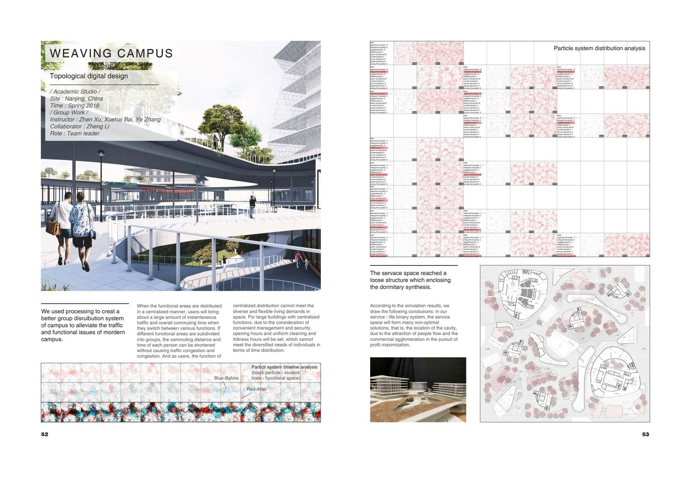
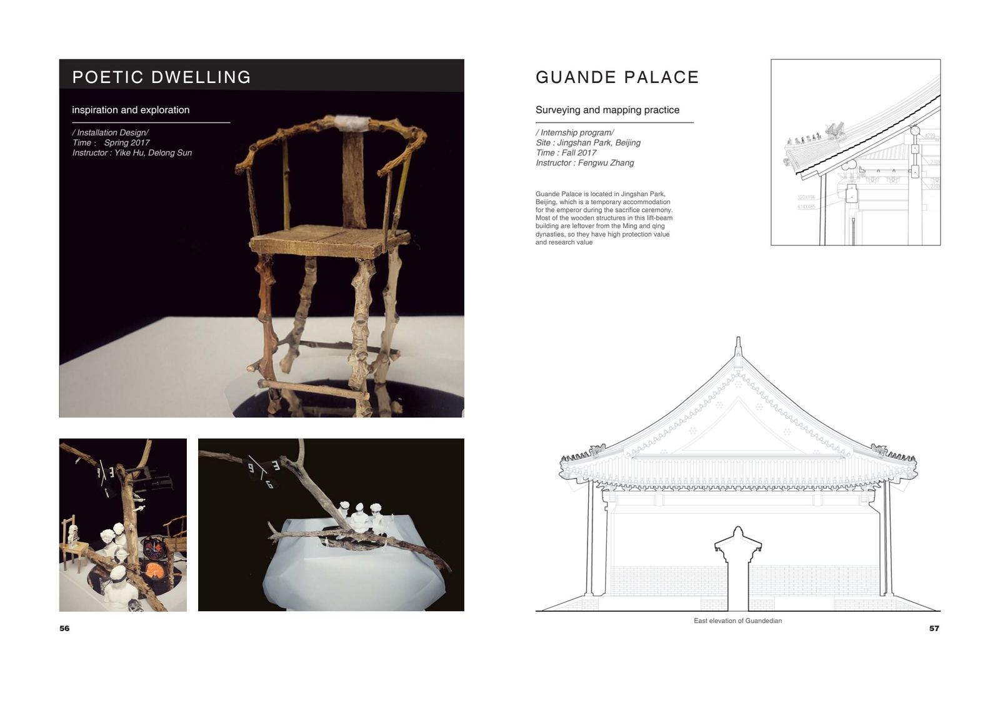

Weaving Campus
Topological Digital Design
An academic studio project in Nanjing, China (Spring 2019) completed with collaborator Zheng Li. Using Processing, we created a group distribution system for campus design to alleviate traffic and functional issues of modern campuses. By subdividing functional areas into smaller groups, commuting distance and time for each person is shortened without causing congestion.

Cloud City
Sharing Collective Housing
A competition entry for UIA-HYP 2018, set in Yau Ma Tei, Hong Kong. The project addresses Hong Kong's housing crisis by reimagining the relationship between the historic fruit market district and high-density collective housing. The two-storey fruit stalls among surrounding high-rises create one of the few urban depressions in Kowloon — a precious fragment of old Hong Kong taste preserved over a century.

Poetic Dwelling & Guande Palace
Installation & Heritage Survey
Poetic Dwelling (Spring 2017) — An installation design exploring the intersection of architecture and poetic expression.
Guande Palace (Fall 2017) — A surveying and mapping practice at Jingshan Park, Beijing. Guande Palace served as a temporary accommodation for the emperor during sacrifice ceremonies. Most of its wooden lift-beam structures date from the Ming and Qing dynasties, possessing high protection and research value.
